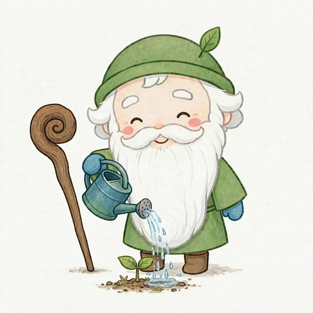
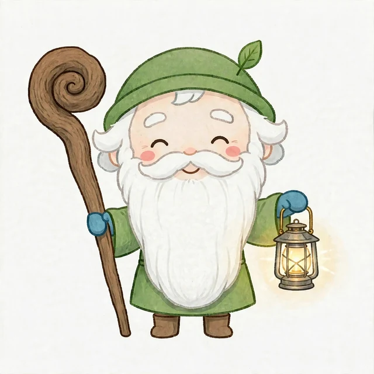
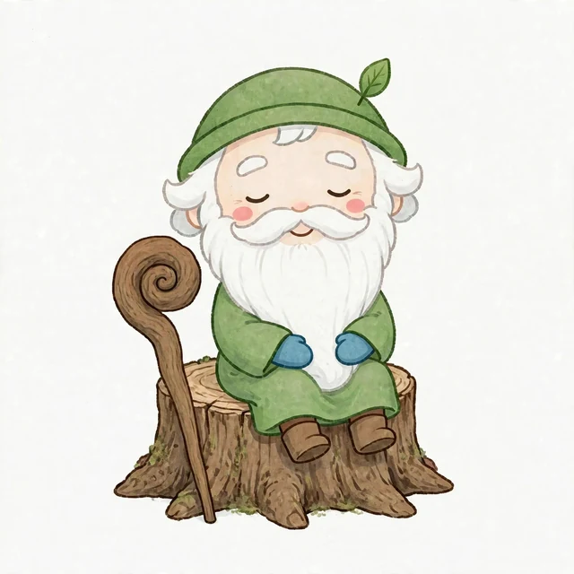

集まれ水女子の森水女子の共感・憩いの場
月のカレンダー

一粒万倍日天赦日

森のほっとニュース
今日のいいニュースは、こちらNEW
NEW
 今日のみーちゃん
今日のみーちゃん
天体暦
彩り生活
生活に彩りを。バランス豊かに。
生活しよう、暮らしていこう。
食事、色と気持ち、運動、からだ、お掃除。
まずは、どれかひとつから、はじめてみてくださいね。
今週の彩り
全部のコーナーを合わせた色です。1週間でリセットされます。
気持ちの葉っぱ

今の気持ちに、いちばん近いものを1つ選んで、森に置いていってくださいね。
文章にしなくて、大丈夫。選ぶだけで、気持ちは外に出ます。
水女子うらない

今日の気持ちを、そっと占います。

ボタンを押すと、今日のうらないが出ますよ。
森の休憩所
ここでは、何もしなくて大丈夫。
言葉にならなくても、大丈夫。
その場で言えなくても、大丈夫。
この森は、ただ休むための場所です。気が向いたときに、また来てくださいね。

新しい手紙が、届いています
森の約束
毎日、来なくて大丈夫です。来たいときに、どうぞ。
読むだけでも、立派な参加です。
ここでは、数字で比べません。
気持ちは、置いていくだけで大丈夫です。返事は、急ぎません。
静かな森でいることを、いちばん大事にします。

今日の森は、ここまで。
また、会いましょうね。
森を、ホーム画面に置けます
iPhoneの方：Safariで開いて、共有のボタンから「ホーム画面に追加」。
Androidの方：Chromeで開いて、右上のメニューから「ホーム画面に追加」。
パソコンの方：Chromeの右上のメニューから「保存と共有」→「ショートカットを作成」で、デスクトップに置けます。ブックマーク（お気に入り）でも大丈夫です。
アイコンから、いつでも森に来られますよ。
よくある質問
集まれ水女子の森は、どんな場所ですか？
感じているのに言葉にできない、水の性質が強い女性が、静かに休んでいける場所です。森の番人が迎えてくれて、気持ちの葉っぱを置いたり、みーちゃんの日記を読んだり、うらないや天体暦を眺めたりできます。何かを頑張る場所ではなく、ただ一息つくための場所として作りました。読むだけでも、立派な参加ですよ。
利用は無料ですか？登録はいりますか？
無料で、登録もいりません。開いて、そのまま使えます。うらないを引いた日や集めた色などの記録は、この端末の中にだけ残る仕組みです。外に送られることはありませんので、安心してくださいね。
「水女子」ではないのですが、入ってもいいですか？
大丈夫ですよ。水の性質が強い方を思い浮かべて作った場所ですが、どなたでも静かに過ごしていただけます。水男子の方も、火の性質が強い方も、どうぞ。
気持ちの葉っぱは、誰かに見られますか？
選んだ葉っぱは、この端末の中に残るもので、誰が置いたか分かる形で見られることはありません。「昨日の森」では、昨日いちばん多かった気持ちだけが、3枚以上集まったときに、みんなの様子として静かに表示されます。気持ちは、置いていくだけで大丈夫ですよ。
通知は、どんなものが届きますか？
新月・満月と、惑星の逆行・順行を、3日前と当日の朝8時ごろにお知らせします。天体暦のところで、欲しいものだけ選べます。通知を受け取るには、このサイトをホーム画面に追加していただくのがおすすめです。
森を作ったのは、誰ですか？
心体調整塾の、たけちゃんです。感じているのに言葉にできなかった妻の姿を、そばで見てきました。言葉にならなくても居ていい場所がほしくて、この森を作りました。無理に話さなくて、大丈夫ですよ。
からだコーナー
体のエリアは、五行の色で分かれています。
火（赤）は、胸とお腹の、2か所です。
両手のひらで、1か所ずつさすってくださいね。1か所30〜100回くらい、やさしくゆっくり。心地よかったら、100回以上やっても大丈夫です。
1回に2か所でも大丈夫です。2か所を3回に分ければ、全部のエリアができますよ。
さすれたら、その色のボタンを押してくださいね。